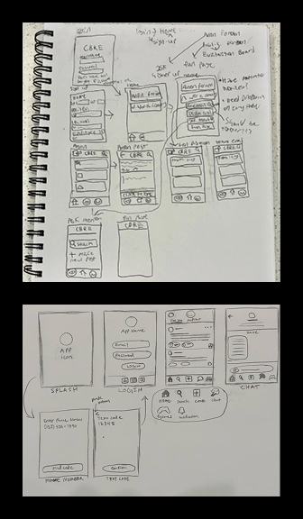
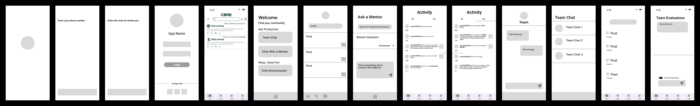

Workly
Background
This project was completed by a team of four over a 24-hour period as a part of UTD’s
2025 Design-a-thon. Despite our clear constraints in time and resources, I’m proud of
what my team accomplished under the circumstances, and I learned a lot about different
elements of the design process. We were given the following prompts:
- General: Design a digital product or experience that reimagines a persistent
human challenge through the lens of future technologies, anticipating tomorrow’s
needs, behaviors, and interactions
- CBRE: Design and present a digital product or experience that reimagines the
workplace environment for employees.
We chose the CBRE prompt and attempted to keep our design visually consistent with
CBRE’s palette.

Research
We were unable to perform any interviews of current or former CBRE employees, so we
instead did secondary research on burnout and how it occurs. Additionally, we took to
sites like Indeed, LinkedIn, Reddit, and other sites that discuss work culture where
users shared their experiences, both past and current, working at CBRE. What we found
was that people in management roles tended to report more positive experiences than
employees in non-management roles, who specifically and consistently expressed
frustration with their management. We found that burnout was caused by employees
feeling tired and powerless in their roles, a sentiment often expressed in non-management
CBRE employees.
Synthesis
In examining burnout and its causes alongside the experiences shared by internet users,
we determined that better communication within the company would prevent burnout among
its employees. If we could make it so managers could be made aware of potential
grievances in a way that protected individual employees, that may help managers create
better working conditions.
Design Iterations
Because we had so little time, we first created our own stretched wireframes, then we
created a low-fidelity wireframe where we could easily see and adjust other’s work so
we would have a clear understanding of what we wanted to do for our final design, while
combining our ideas from our sketches. We worked together to discuss how CBRE’s color
palette should be incorporated into our design
From our research and synthesis, we determined that an employee forum(inspired by
Yik Yak, Reddit, and Twitter) would be most beneficial. Our app would allow anonymous
and non-anonymous discussion, and for team chats that would be non-anonymous group /
individual discussions of employees who work together. We removed the following ideas:
Activities/Game Page, Needs activities to combat boredom, Doodle board, Gamification –
leaderboard, and an Evaluation page.


Final Design
Our final prototype took inspiration from sites like Reddit and used CBRE’s color
palette for consistency.
Future Changes
Due to our time constraints, our project lacked the level of research I like to do in
my prototypes, so future changes would be guided by interviews, surveys, and user
testing to determine what would most benefit CBRE’s employees, as our ideas are not
firmly tested.